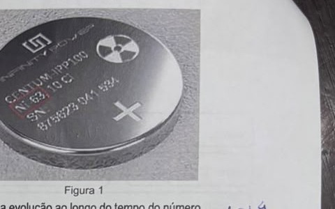
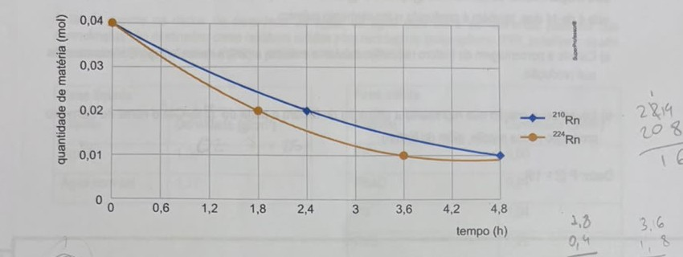
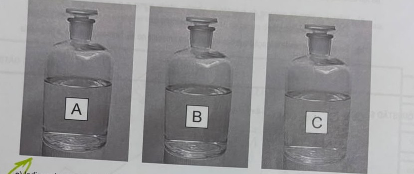
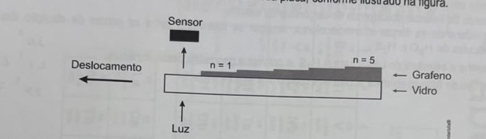

Professores: Paulo e Eduardo
A geração de eletricidade limpa, barata e constante é algo essencial para o desenvolvimento sustentável. Dispositivos eletrônicos portáteis funcionam, em geral, com baterias químicas, que precisam ser constantemente recarregadas e têm vida útil limitada. Uma alternativa promissora para a substituição de baterias químicas em dispositivos portáteis vem surgindo com o desenvolvimento de baterias nucleares, como a mostrada na Figura 1, constituídas por emissor de radiação beta (β), como o 63Ni, e um semicondutor.
A energia da radiação beta excita os elétrons do semicondutor, criando lacunas onde antes havia elétrons. Esses pares de lacunas-elétrons geram uma diferença de potencial que pode ser aproveitada na forma de eletricidade.

Figura 1
a) Desenhe, nos gráficos apresentados no quadro de respostas, a evolução ao longo do tempo do número de átomos de 63Ni e de 63Cu presentes em uma bateria nuclear de 63Ni, sabendo que o 63Cu é um isótopo estável.
b) Assuma que essa bateria é operacional até que 75% da quantidade 63Ni sejam consumidos. Qual a vida útil da bateria em anos, sabendo que o tempo de meia-vida do 63Ni é de 100 anos? A massa da bateria aumenta, diminui ou se mantém ao longo do seu tempo de uso?
a) O 63Ni decai por emissão beta, se transformando em 63Cu (que é estável). Por isso, o gráfico do 63Ni deve ser uma curva de decaimento exponencial (caindo pela metade a cada 100 anos), enquanto o gráfico do 63Cu deve ser uma curva crescente com o formato "espelhado" — já que cada átomo de Ni que decai vira um átomo de Cu, a soma dos dois permanece sempre igual ao número inicial de átomos de Ni.
b) Se 75% do 63Ni foi consumido, restam 25% (ou seja, 1/4) da quantidade inicial. Com meia-vida de 100 anos: 100% → 50% (após 100 anos) → 25% (após mais 100 anos, totalizando 200 anos). Logo, a vida útil da bateria é de 200 anos. Quanto à massa: ela se mantém praticamente constante, pois o decaimento beta transforma um nêutron do núcleo em um próton (Ni vira Cu), mudando o número atômico mas emitindo apenas um elétron e um antineutrino — partículas de massa desprezível — sem alterar de forma perceptível a massa total do material.
O radônio é um gás nobre cujos radioisótopos 210Rn e 224Rn sofrem decaimento por emissão das partículas alfa e beta, respectivamente. Observe no gráfico o decaimento de igual quantidade de matéria inicial desses radioisótopos:

a) Determine a razão entre os tempos de meia-vida do 210Rn e do 224Rn.
b) Em seguida, identifique o isótopo do elemento formado no decaimento do 210Rn.
c) Quantas partículas alfas e betas o 224Rn emite até sofrer transmutação e se tornar o 208Pb?
Dados: Utilizar números atômicos dos elementos da tabela periódica.
a) Pelo gráfico, o 210Rn cai de 0,04 para 0,02 mol em cerca de 2,4h (essa é sua meia-vida), enquanto o 224Rn cai de 0,04 para 0,02 mol em cerca de 1,8h. A razão entre as meias-vidas é 2,4 ÷ 1,8 = 4/3 (≈ 1,33).
b) O 210Rn (Z = 86) emite uma partícula alfa, que reduz o número atômico em 2 e o número de massa em 4. O isótopo formado é o 206Po (polônio-206, Z = 84).
c) Do 224Rn (Z=86, A=224) até o 208Pb (Z=82, A=208), a massa diminui em 224−208 = 16 — como cada partícula alfa reduz a massa em 4, isso indica 4 partículas alfa emitidas. Essas 4 partículas alfa, sozinhas, reduziriam o número atômico em 4×2 = 8 (de 86 para 78), mas o produto final tem Z = 82. Como cada partícula beta emitida aumenta o número atômico em 1 (um nêutron vira um próton), são necessárias 82 − 78 = 4 partículas beta para completar a transmutação. Resposta: 4 partículas alfa e 4 partículas beta.
O elemento fósforo apresenta um único isótopo natural, com 16 nêutrons em seu núcleo. No entanto, podem ser produzidos isótopos radioativos para utilização em medicina nuclear, como o fósforo-32, obtido pela reação nuclear de um nêutron (¹₀n) com o 3216S. Nessa reação nuclear, além do fósforo-32, cuja meia-vida é de 14 dias, também é produzido outro elemento químico.
a) Calcule a porcentagem de fósforo radioativo existente em uma amostra desse isótopo 6 semanas após sua produção.
b) Equacione a reação que representa a obtenção do fósforo a partir do 3216S. Cite o nome do elemento produzido nessa reação, além do fósforo.
Dado: P (Z = 15).
a) 6 semanas = 42 dias. Com meia-vida de 14 dias, isso equivale a 42 ÷ 14 = 3 meias-vidas. A quantidade restante é 100% ÷ 2³ = 100% ÷ 8 = 12,5% do fósforo-32 radioativo original.
b) Equação: ¹₀n + 3216S → 3215P + 11H. Conferindo a conservação de massa (1+32=32+1) e de carga (0+16=15+1), o outro produto formado, além do fósforo-32, é um próton (hidrogênio-1) — ou seja, um nêutron do enxofre-32 "vira" fósforo-32 ao capturar o nêutron incidente e liberar um próton.
Uma das formas de fazer a reciclagem de misturas de plásticos envolve o uso de água e água com sal. Quando uma mistura de fragmentos plásticos é adicionada a um desses líquidos, os mais densos submergem e os menos densos permanecem como sobrenadantes (flutuam).
A tabela mostra os dados de densidade da água, da água com sal e de diferentes plásticos que normalmente são destinados como resíduos sólidos para reciclagem: polipropileno (PP), polietileno de alta densidade (PEAD), poliestireno (PS) e policloreto de vinila (PVC).
| Líquido | Densidade (g/cm³) |
|---|---|
| Água | 1,00 |
| Água com sal | 1,17 |
| Plástico | Densidade (g/cm³) |
|---|---|
| PP | 0,90 |
| PEAD | 0,94 |
| PS | 1,04 |
| PVC | 1,22 |
No infográfico da prova original, são representadas as etapas do processo de separação: os fragmentos de PP, PEAD, PS e PVC são colocados primeiro em água — os que flutuam formam a "Fase sobrenadante 1" e os que afundam formam a "Fase submersa 1"; a fase submersa 1 é então colocada em água com sal, separando-se em "Fase sobrenadante 2" e "Fase submersa 2".
a) Identifique os plásticos que estão em cada um dos respectivos grupos: Fase Sobrenadante 1, Fase Submersa 1, Fase Sobrenadante 2 e Fase Submersa 2.
b) Calcule o valor da densidade de uma mistura de 40% de água e 60% de água com sal. Justifique sua resposta apresentando os cálculos.
a) Na água (densidade 1,00): PP (0,90) e PEAD (0,94) flutuam → Fase Sobrenadante 1 = PP e PEAD; PS (1,04) e PVC (1,22) afundam → Fase Submersa 1 = PS e PVC. Colocando essa fase submersa na água com sal (densidade 1,17): PS (1,04) flutua → Fase Sobrenadante 2 = PS; PVC (1,22) afunda → Fase Submersa 2 = PVC.
b) Considerando uma média ponderada pelas proporções de cada líquido na mistura: densidade = (0,40 × 1,00) + (0,60 × 1,17) = 0,40 + 0,702 = 1,102 g/cm³ (aproximadamente).
Em um laboratório, encontram-se os frascos A, B e C. Sabe-se que eles contêm álcool industrial 100%, uma mistura de acetona com água 50% (v/v), e uma solução aquosa de cloreto de sódio (sal de cozinha) na concentração de 10% (m/v), porém, os rótulos não permitem a identificação do conteúdo de cada frasco.

a) Indique duas propriedades físicas que possam ser utilizadas para distinguir os líquidos contidos nos frascos A, B e C.
b) Depois de identificar os frascos que contêm as misturas de água e acetona e de água e cloreto de sódio, apresente a técnica de separação capaz de isolar cada um dos seus componentes.
a) Duas propriedades físicas úteis para diferenciar os três líquidos são a densidade (cada mistura tem uma densidade diferente, por causa das diferentes substâncias e concentrações envolvidas) e a temperatura de ebulição (o álcool puro, a mistura água/acetona e a solução salina têm pontos de ebulição distintos entre si).
b) Para separar a água e o cloreto de sódio (sal dissolvido em líquido), usa-se a destilação simples: a água evapora, é condensada e recolhida separadamente, restando o sal (sólido) no frasco original. Para separar a água e a acetona (dois líquidos miscíveis, mas com pontos de ebulição bem diferentes — acetona ≈ 56 °C, água ≈ 100 °C), também se usa a destilação (simples, dada a grande diferença entre os pontos de ebulição): a acetona evapora primeiro e é recolhida separadamente, restando a água no frasco original.
O nitrogênio pode ser absorvido por alguns vegetais da família das leguminosas por meio do íon amônio NH₄⁺. Para que essa absorção ocorra, inicialmente, um grupo de bactérias presente nas raízes desses vegetais converte o nitrogênio molecular N₂ do ar em amônia NH₃. A amônia em meio aquoso é convertida no íon amônio, utilizado por esses vegetais.
a) Indique a fórmula química da substância simples citada acima e o caráter polar ou apolar da ligação entre N e H.
b) Em seguida, nomeie a ligação química interatômica presente no N₂. Nomeie, também, a geometria molecular do NH₃.
a) A substância simples citada é o gás nitrogênio, N₂ (formada por átomos de um único elemento químico). A ligação entre N e H (presente na amônia, NH₃) é covalente polar, já que o nitrogênio é bem mais eletronegativo que o hidrogênio, gerando uma distribuição desigual da densidade eletrônica entre os átomos.
b) No N₂, a ligação interatômica é uma ligação covalente (tripla covalente apolar), já que é formada entre átomos do mesmo elemento (mesma eletronegatividade, sem polarização da ligação). A geometria molecular do NH₃ é piramidal (trigonal piramidal), resultado da repulsão do par de elétrons não-ligante do nitrogênio, que "empurra" os três hidrogênios para fora do plano.
Em algumas indústrias, a fumaça produzida pelo processo de queima de combustíveis fósseis contém a mistura dos seguintes gases residuais: CO₂, CO, SO₂, N₂ e O₂.
a) Nomeie o CO₂, indique a geometria molecular do SO₂.
b) Em seguida, escreva o símbolo do elemento químico que compõe um dos gases residuais, sabendo que esse elemento pertence ao grupo 15 da tabela de classificação periódica.
a) O CO₂ é chamado de dióxido de carbono (ou gás carbônico). A geometria molecular do SO₂ é angular, pois, apesar de ter apenas três átomos, o enxofre central possui um par de elétrons não-ligante que distorce a geometria (que seria linear sem esse par isolado), forçando os dois oxigênios para um ângulo menor que 180°.
b) Entre os gases citados, o que contém um elemento do grupo 15 (VA) da tabela periódica é o N₂ — o elemento é o nitrogênio (N).
O gás nitrogênio, presente no ar, precisa ser transformado em íons nitrato e amônio nas raízes das plantas para ser incorporado nas biomoléculas que possuem o elemento químico nitrogênio em sua composição, como as proteínas e o DNA. Johanna Döbereiner, uma pesquisadora brasileira de origem alemã, descobriu que bactérias eram responsáveis por essa conversão química e, por ter contribuído muito para o aumento da produção agrícola, foi indicada ao Prêmio Nobel da Paz em 1997.
a) Escreva as fórmulas estruturais do gás nitrogênio (N₂) e dos íons nitrato (NO₃⁻) e amônio (NH₃).
b) Qual o tipo de ligação química presente em cada composto químico formado?
a) N₂: N≡N (ligação tripla entre os dois nitrogênios, cada um completando o octeto). NO₃⁻ (íon nitrato): um átomo de N central ligado a três átomos de O — na estrutura mais estável, há ressonância entre as três formas possíveis, com uma ligação dupla N=O e duas ligações simples N–O (uma delas carregando a carga negativa), sendo a carga −1 distribuída entre os oxigênios. NH₃ (amônia): N central ligado a três H por ligações simples, com um par de elétrons não-ligante no nitrogênio, resultando na geometria piramidal já comentada na Questão 06.
b) Em todos os três casos, a ligação química é covalente — no N₂, covalente apolar (átomos iguais); no NO₃⁻ e no NH₃, covalente polar (átomos de eletronegatividades diferentes, N–O e N–H).
O grafeno (forma alotrópica do carbono) é considerado um material de elevada transparência devido à baixa absorção de luz (2%) por monocamada formada. Em um experimento, várias camadas de grafeno foram depositadas sobre uma placa de vidro conforme apresentado na figura a seguir. Em uma das extremidades, um feixe de luz foi incidido na placa. A parte não absorvida pelo material foi transmitida e detectada com uso de um sensor posicionado acima da placa, conforme ilustrado na figura.

Com base nas informações fornecidas,
a) Esboce um gráfico que represente a porcentagem de luz transmitida em função da quantidade de camadas de grafeno quando a placa de vidro é deslocada conforme indicado na figura. Desconsidere qualquer interferência do vidro;
b) Cite outras três formas alotrópicas do carbono.
a) Como cada camada absorve 2% da luz que chega até ela, a porcentagem transmitida após n camadas é dada por %T = 100% × (0,98)ⁿ — ou seja, o gráfico não é uma reta, mas uma curva de decaimento exponencial, decrescente e cada vez menos íngreme à medida que n aumenta (semelhante ao formato de um decaimento radioativo).
b) Além do grafeno, outras formas alotrópicas do carbono são o diamante, o grafite e os fulerenos (ou, como variante, os nanotubos de carbono).
Sabe-se que compostos constituídos por elementos do mesmo grupo na tabela periódica possuem algumas propriedades químicas semelhantes. Entretanto, enquanto a água é líquida em condições normais de temperatura e pressão (CNTP), o sulfeto de hidrogênio, também chamado de gás sulfídrico, como o próprio nome revela, é gasoso nas CNTP.
a) Tendo em vista a posição dos elementos na tabela periódica, escrever a configuração eletrônica da camada de valência dos átomos de oxigênio e de enxofre.
b) Considerando as forças intermoleculares, explicar as diferenças entre os pontos de ebulição das moléculas de H₂O e H₂S.
c) Desenhe a estrutura de Lewis para o H₂S e preveja a geometria dessa molécula.
d) Que tipo de ligação química ocorre nos compostos H₂O e H₂S?
a) Oxigênio (Z=8): configuração da camada de valência 2s² 2p⁴. Enxofre (Z=16): configuração da camada de valência 3s² 3p⁴. Ambos têm 6 elétrons na camada de valência (mesmo grupo, 16/VIA), mas em níveis de energia diferentes.
b) A água forma ligações de hidrogênio entre suas moléculas — interação intermolecular forte, possível porque o oxigênio é muito eletronegativo e tem raio atômico pequeno, concentrando bastante carga negativa. Já o H₂S não forma ligações de hidrogênio significativas, pois o enxofre, apesar de estar no mesmo grupo, é maior e menos eletronegativo que o oxigênio — suas moléculas interagem apenas por forças dipolo-dipolo, bem mais fracas. Por isso a água tem um ponto de ebulição muito mais alto (100 °C) e é líquida nas CNTP, enquanto o H₂S, com interações mais fracas, é gasoso nas CNTP.
c) Estrutura de Lewis do H₂S: H–S–H, com dois pares de elétrons não-ligantes no enxofre. Assim como na água, esses pares isolados fazem com que a geometria molecular seja angular (não linear).
d) Em ambos os compostos (H₂O e H₂S), a ligação química é covalente polar, já que O e S são mais eletronegativos que o H, gerando uma distribuição desigual dos elétrons compartilhados.